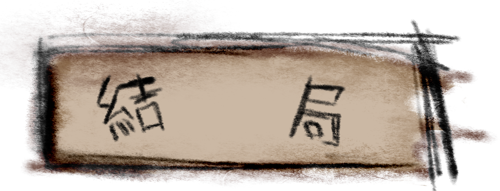

當主角幫助塗鴉找回所有被藏起來的日記後，她開始重新體驗自己曾記錄的記憶
然而，隨著日記一頁一頁被拼湊完整，主角發現一些記憶並不如她所記得的那樣
反而揭露了她曾經刻意遺忘的黑暗過去。當真相完全展現在眼前時。
主角面臨抉擇：是要面對這些隱藏的記憶，還是永遠封印這本日記。

支線_1
當主角選擇面對真相
她感到一股強烈的情感湧上心頭，每一個拼湊完整的日記片段，都喚起了她曾經
刻意遺忘的黑暗過去——那些不堪回首的痛苦、失落的關係、以及未完成的承諾
這些回憶像巨浪一樣淹沒了她，讓她不得不正視自己曾經逃避的事實。儘管回憶
帶來無比的痛苦，但主角沒有逃避。她決心接受這些曾經的傷痕，並且以此為契
機重建自己。日記最終被完全拼湊起來，塗鴉們安靜了下來，彷彿完成了它們的
使命。主角開始重新整理自己的生活，逐漸修復那些破碎的關係，並試圖以新的
方式面對自己的過去。雖然回憶無法抹去，但她學會了與這些痛苦共存，並逐漸
從過去的陰影中走出。她不再依賴那本神奇的日記，而是以現實的方式處理自己
的情緒和問題。

支線_2
當主角選擇封印日記
當主角選擇封印日記後，她感覺心中的壓力突然解除，彷彿那些沉重的記憶再也無
法侵擾她。她將日記小心翼翼地鎖進一個箱子，並把它藏在家中最不顯眼的角落並
試圖遺忘它的存在。日子似乎恢復了正常，但主角偶爾還是會感到一種無法言喻的
陰影笼罩着她。每當夜深人靜時，她仿佛聽到塗鴉們在日記裡輕聲耳語，彷彿它們
仍然活在日記中，等待有一天能再次被釋放。最終，這種隱約的恐懼開始侵蝕她的
精神。她開始避免進入藏有日記的房間，甚至拒絕談論與日記相關的事情。然而無
論她走到哪裡，那種微弱的聲音總是在她耳邊響起，提醒她那封印的秘密始終未曾
真正消失。